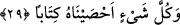

Ömer b. Abdulaziz şöyle demiş olmaktadır: Besmelenin dişlerini o kadar belirgin yap
ki, sin harfinin kendisi gibi apaçık olsun. Nitekim eş-Şerif de aynı kanâate sahip
olmuştur.
29. Biz ise her şeyi bir kitapta sayıp yazmışızdır.
Biz onların amelleri de dâhil olmak üzere bütün her şeyi bir kitapta yazdık. “Külle
şey’in” ifâdesinin mansub olması, başında gizli bir fiilin bulunmasından dolayıdır.
Bunun ne olduğunu bize “saydık” anlamına gelen “ahsaynâhu” fiili göstermektedir.
“Ahsaynâhu” ifâdesi “biz onları bir kitapta muhâfaza ettik, bir kitapta yazıp kayıt altına
aldık” demektir. Az önce “külle” kelimesinin gizli bir fiil ile mansub olduğunu
belirtmiştik. Bu kelimenin gizli bir fiil ile mansub olması, kendini açıklayan bir fiilin
cümlede gelmesi şartına bağlıdır. Tercih edilen açıklama şekli budur. Çünkü bundan
önce geçen cümle fiil cümlesidir. Bu cümlenin de fiil cümlesi olması gerekir ki onun
üzerine atfı mümkün olsun. Ayrıca bu “biz her şeyi bir kitapta sayıp yazdık” cümlesinin
mu’teriza/parantez cümlesi olması bu açıklamamıza engel değildir.
Şöyle bir açıklama yapmak da mümkündür: Burada vurgulanmak istenen önemli nokta
her şeyin bir kitapta kayda geçirildiğinin haber verilmesi değil, tam tersine her şeyin
kitapta bir bir sayılıp yazıldığıdır. İşte bu vurgunun sağlanıp anlama katılması için
“külle şey’in” ifâdesi fiilinden önceye getirilmiştir.
“Kitâben” kelimesi, “sayıp yazdık” fiilini pekiştiren ama o fiilin kendi kökünden
olmayan bir masdardır. “Kitâben” masdarının “ahsaynâhu” fiilini pekiştirmesi,
“saymak” fiili ile “yazmak” fiilinin aynı kategoride olmasından bir başka ifâdeyle zabt
ve rabt altına alma anlamında ortak olmalarından dolayıdır. Buna göre âyet-i kerîmede
sanki şöyle denmiş olmaktadır: “Biz her şeyi yazıyla kayıtlanan ilim vâsıtasıyla,
kuvvette ve sâbit oluşta müsavi bir biçimde sayıp yazdık. Ya da biz her şeyi yazdık ve
isbat ettik.” “Ahsaynâhu kitâben” tâbirinin “ihtibâk” kabilinden bir ifâde olduğunu
söyleyebiliriz. Yâni ikinci kelimenin “kitaben” fiilinin, birincinin “ahsaynahu”
karinesiyle,
birincinin
masdarının
“ihsaen”
ikincinin
“kitaben”
karinesiyle
hazfedildiğini söyleyebiliriz. Buna göre hazfedilenleri yerine koyarak ifâdeyi tam
söyleyelim: “Ahsaynâhu ihsâen ve ketebnâhu kitaben.” Az önce okuduğumuz cümlede
altı çizili olan kelimeler çizili olmayanların delâletiyle ifâdeden çıkarılmıştır.
Bir başka açıklama da şudur: “Ahsaynâhu kitâben” ifâdesi hal olmak üzere “biz her
şeyi levh-i mahfuzda ve hafaza meleklerinin sayfalarında yazılmış olarak sayıp yazdık”
demektir.
Tefsirini yaptığımız bu âyet, 28 ile 30. âyetler arasına girmiş bir mu’teriza/parantez
cümlesidir. Bu cümle, onların hesaba çekilmeyi inkârlarını ve Allah’ın âyetlerini